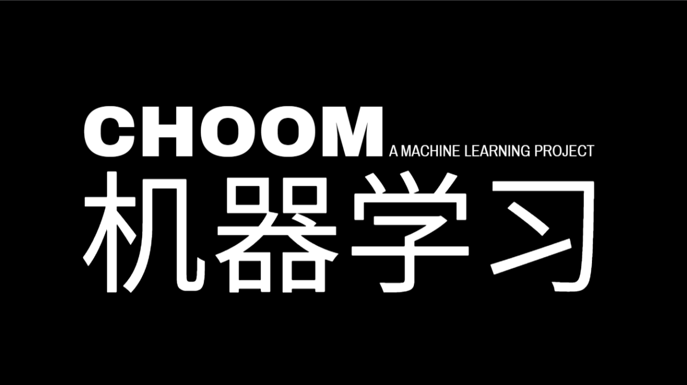
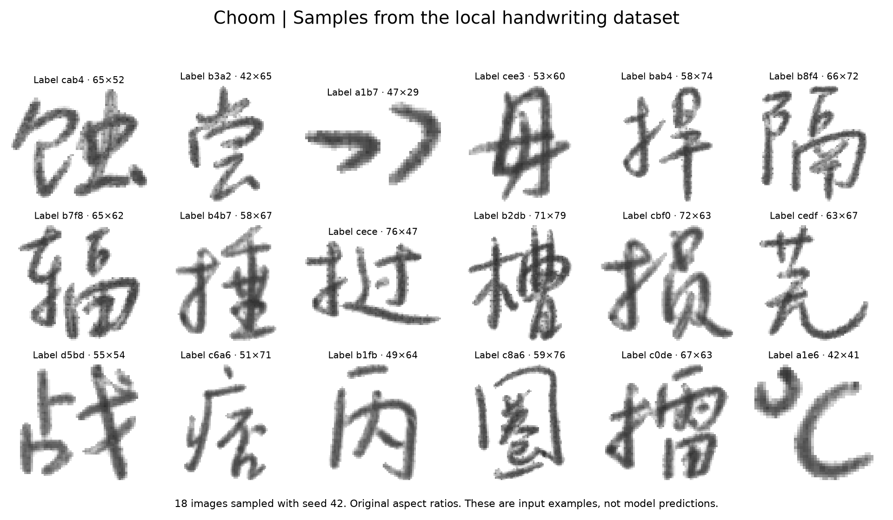

PROJECT FILE / Completed
Choom
Exploring artificial intelligence, one handwritten character at a time.
Python · CNN · Computer vision
Why I started
I started Choom to understand what artificial intelligence actually was. Building a Chinese handwriting recognition model taught me how neural networks process information and how much the quality of a data science project depends on its data.
What I built and how it works
A completed neural-network model for recognizing handwritten Chinese characters. In my testing, it recognized characters correctly roughly 80–90% of the time. This is an approximate result from my testing, rather than a standardized benchmark.

Choom works by taking .gnt files, a dataset of written chinese characters labelled in hex, and parsing through them to denote which part of the byte represents what. Grayscale data is then passed into the program. Utilizing pytorch, the neural net is trained cycle per cycle, eventually obtaining the weights which are saved accordinly using numpy.
What it opened
Choom was a stepping stone. As I learned digital design, I became curious about the hardware behind AI. That curiosity led me to tensor processing units and, eventually, 2TheMoon.
LET’S BUILD SOMETHING
Available for co-op · January 1, 2027
Seeking opportunities in software engineering, hardware / FPGA, and machine learning.